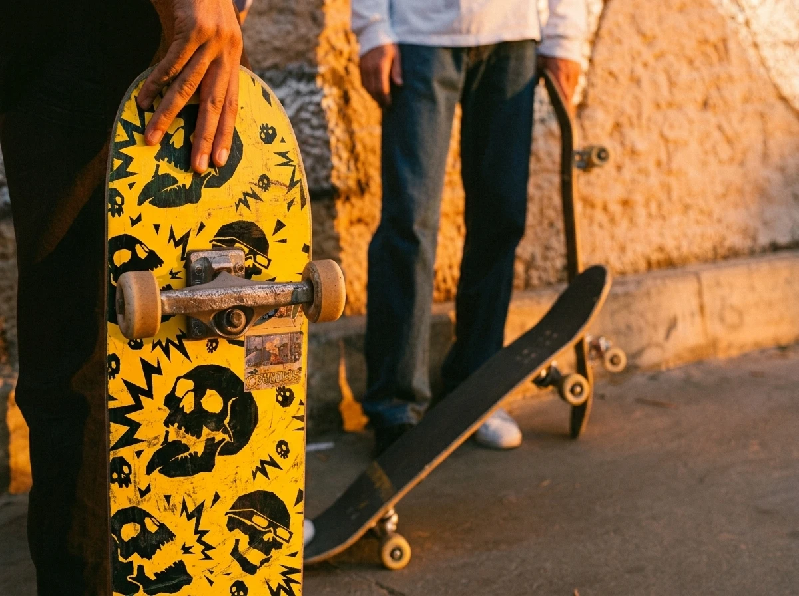
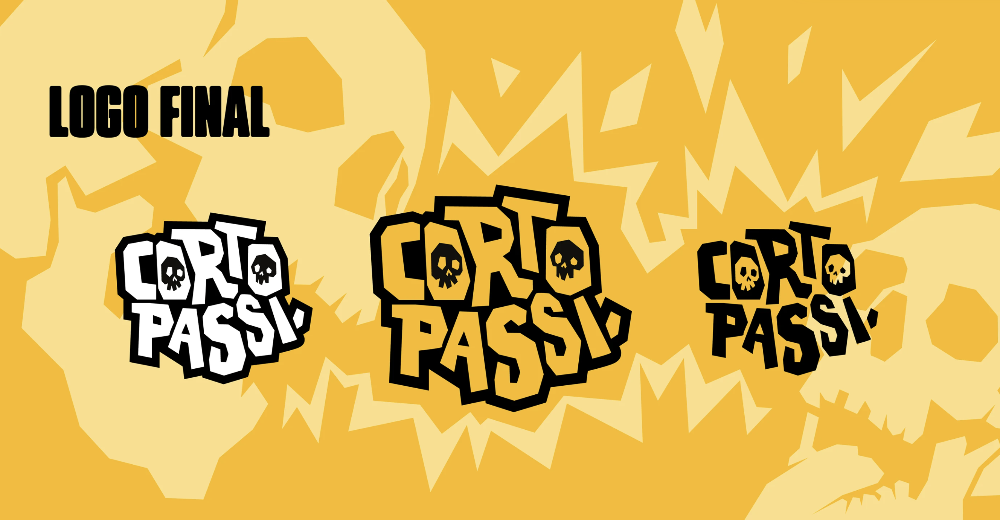
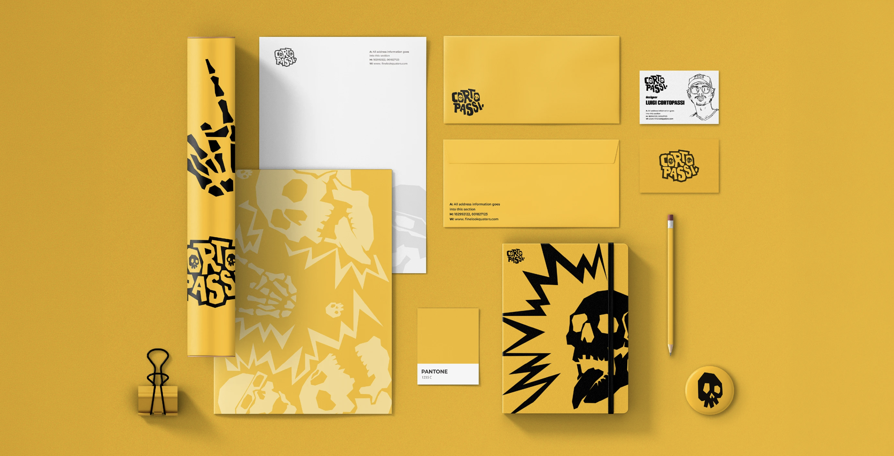
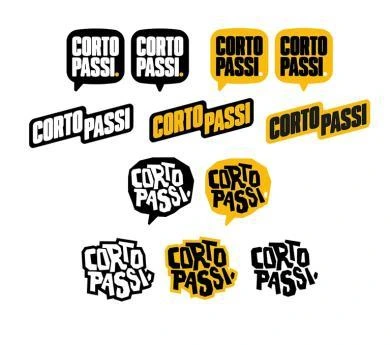
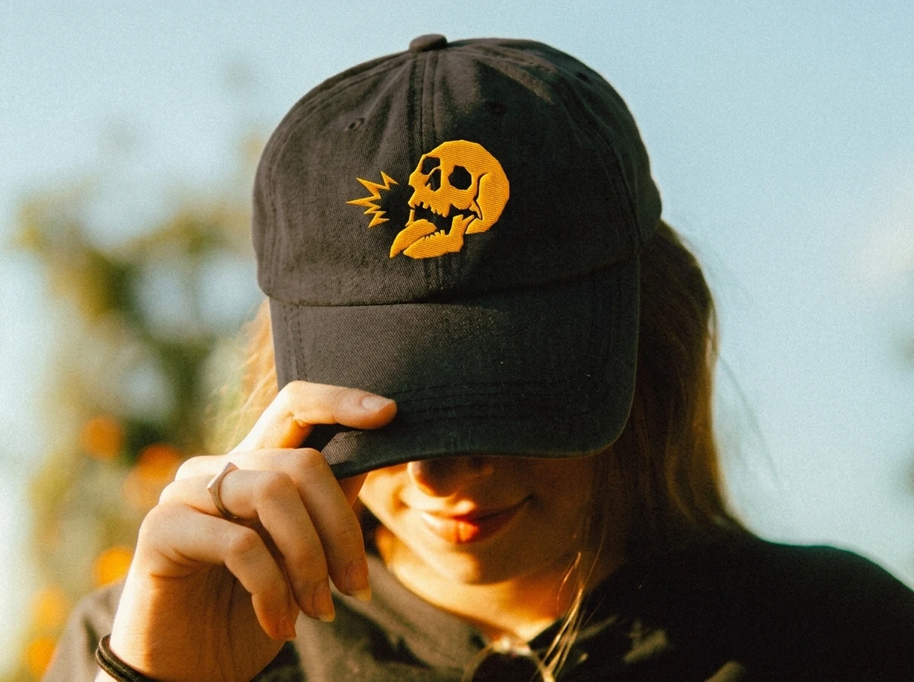
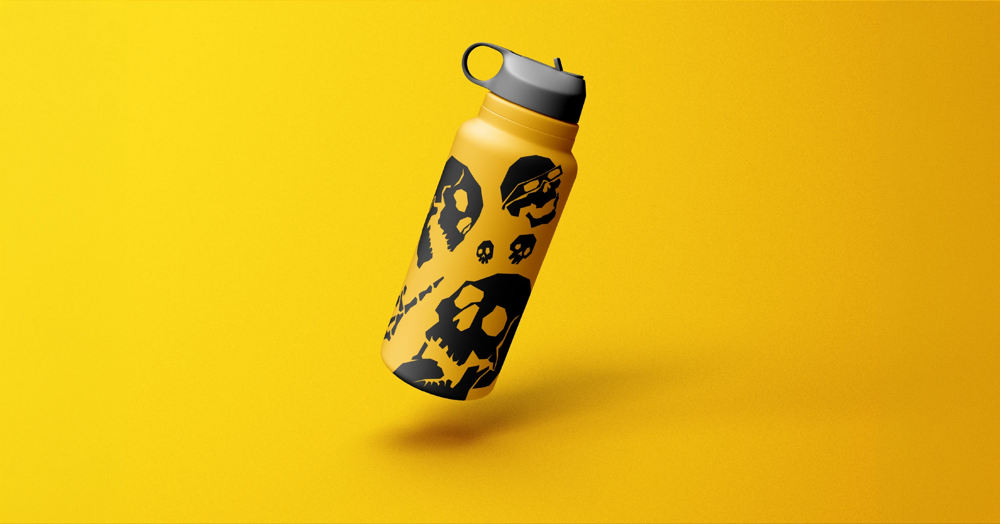

Cortopassi

Minha identidade visual nasceu da relação com o universo dos quadrinhos e da cultura geek, referências que sempre fizeram parte da minha trajetória. Elementos como caveiras e fantasmas surgiram ainda no início desse processo, quando eu começava a construir uma linguagem visual própria.
Ler mais sobre o projeto
Em 2018, criei a conta @phantom_comics para publicar meus desenhos de forma anônima e construir um projeto do zero. Depois de um período abandonado, retomei a ideia em 2023 com a @phantom_comics_23, explorando diferentes conteúdos. Com o tempo, o perfil se aproximou cada vez mais do design e acabou se tornando meu espaço como designer.
Hoje, o nome Phantom Comics já não representa completamente essa nova fase. Por isso, a identidade passa a se aproximar do meu próprio nome, acompanhando essa transformação sem abandonar os elementos que fazem parte da minha história.
As referências aos quadrinhos, às caveiras e aos fantasmas permanecem como fragmentos dessa trajetória, conectando o que veio antes ao momento atual. Mais do que uma mudança de nome, essa
nova identidade representa uma evolução: uma fase mais autoral, pessoal e ligada ao meu trabalho como designer.




